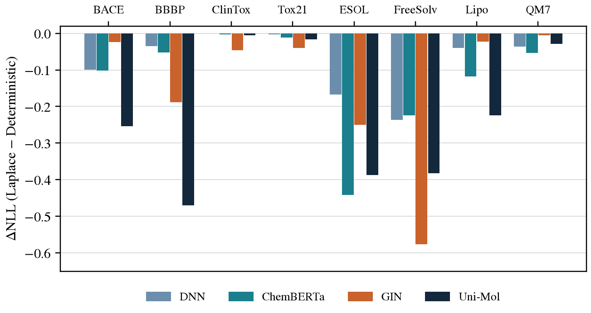
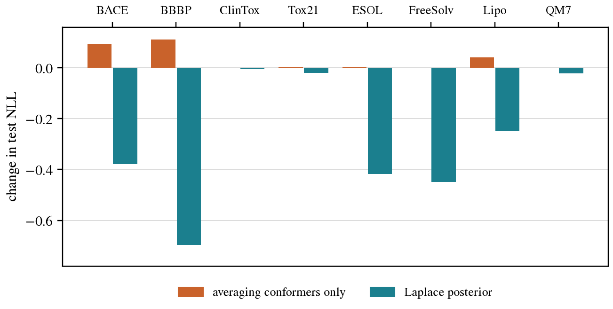
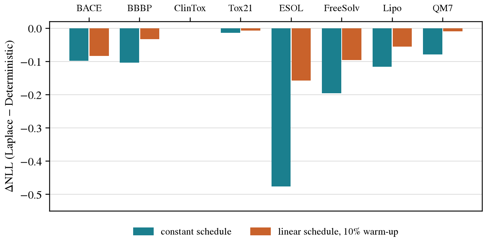
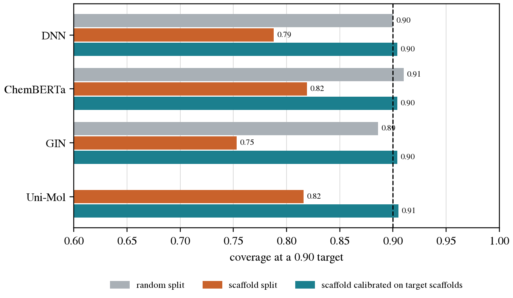
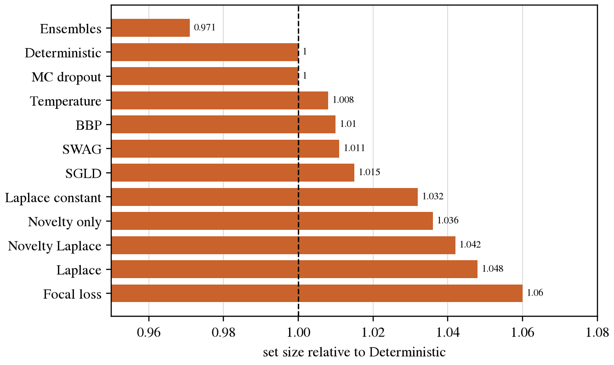

Last-layer Laplace and split conformal prediction under scaffold shift
Technical report 2 of 2: extension of the selected paper
Contents
Goals
Summary
1. Background
2. H1: Laplace improves NLL on new scaffolds
3. H2: the Laplace gain does not depend on how the network was trained
4. H3: Laplace adds value beyond a single fitted recalibration
5. H4: the choice of the prior strength is not what limits Laplace
6. H5: Laplace still helps when applied to every member of an ensemble
7. H6: split conformal prediction keeps its 90 % coverage under scaffold shift
8. H7: the failure lies in the calibration data
9. Summary of the hypotheses
10. Discussion
11. Limitations
12. Conclusion
13. Implementation and how to reproduce
Goals
MUBen compares eight uncertainty methods but contains neither a cheap post-hoc Bayesian method nor a method with a coverage guarantee, and it evaluates both split types without asking what happens to guarantees when test molecules come from new chemical series. This report extends the reproduced benchmark (Report 1) with two methods and tests them where it matters most, on new scaffolds:
Last-layer Laplace: a Gaussian posterior over the output layer of a trained network, fitted in seconds without retraining. Does it improve the uncertainty of molecular models, and is the improvement more than a simple recalibration?
Split conformal prediction: prediction sets and intervals with a promised coverage of 90 %. Does the promise survive a scaffold shift, and what repairs it?
Document the contributions and limitations of the extension and everything needed to repeat it.
Summary
Laplace lowers NLL on new scaffolds on average for all four models: the mean change is negative in all 32 model-dataset cells (−0.077 DNN, −0.126 ChemBERTa, −0.144 GIN, −0.221 Uni-Mol), significant at the dataset level for every model (one-sided exact sign-flip test over the eight datasets, p = 0.0039; 0.0156 after Holm correction over the four models). In regression the predicted mean is unchanged, so the gain can only come from wider variances; in classification it shrinks over-confident probabilities. Per-dataset consistency is weaker for GIN (4 of 8 datasets).
Much of the gain is generic. One fitted scalar per task (a variance multiplier or a temperature, fitted on validation data) matches or exceeds it: Laplace is clearly better on 0 to 2 of 8 datasets per model and worse on 0 to 5. The benefit also shrinks by about 60 % when the network is trained with a better learning-rate schedule, a validation-free prior gives a much smaller gain, and on an ensemble Laplace helps less.
Conformal coverage fails for classification under scaffold shift: 0.75 to 0.82 against a target of 0.90 for every model and every UQ method, while regression holds (0.89 to 0.92). Better uncertainty methods do not repair it: the evidence points to the calibration data, which do not look like the test molecules: calibrating on molecules of the target scaffolds repairs it.
It can be repaired. About 20 labelled molecules from the target scaffolds, used alone, restore coverage to 0.89 to 0.90 (sets 16 to 33 % larger); similarity weighting helps partly without labels; the failure does not depend on the training schedule.
Everything here is exploratory: the test sets had already been used for the baselines, with three to twelve repeats per cell.
1. Background, methods and design
1.1 Why new scaffolds
A chemist screening new compounds needs to know which predictions to trust. A scaffold split puts compounds with a core structure absent from the training set into the test set, which mimics a new chemical series; a random split is the easier case with close analogues in training. Models are more overconfident on scaffold splits, and the assumption behind conformal guarantees (calibration and test molecules are exchangeable) is broken by them, so a scaffold split is a demanding test for both methods. Report 1 shows that our learned variances cover only 0.80 to 0.81 of a 90 % interval on scaffold splits.
1.2 Last-layer Laplace
The output weights $\theta$ of a trained network are treated as Gaussian around their trained values, $\theta\sim\mathcal N\big(\hat\theta,\,(H+\alpha I)^{-1}\big)$, where $H$ is the analytic Hessian of the loss with respect to the last layer on the training data (checked against automatic differentiation at every start) and $\alpha$ is the prior precision. The network up to the last layer is a fixed feature extractor $\phi(x)$. For a molecule $x$ let
The mean is unchanged, so RMSE and MAE do not change and the NLL gain can only come from wider variances. $\alpha$ is chosen per task on validation NLL over the grid $10^{-4}\le\alpha\le10^{4}$, or by the marginal likelihood (Section 5). No network is retrained; the networks are early-stopped, so $\hat\theta$ is not an exact MAP estimate.
1.3 Baselines and conformal prediction
One-parameter recalibration (the baseline Laplace must beat) fits one number per task on validation data only: in regression a variance multiplier $\hat s=\frac1n\sum_{i}(y_i-\mu_i)^2/\sigma_i^2$, so that the predictive variance becomes $\hat s\,\sigma^2$; in classification a temperature $T$ that divides the logit.
Split conformal prediction scores each calibration molecule, $s_i=1-\hat p(y_i\mid x_i)$ for classification (the LAC score) and $s_i=|y_i-\mu_i|/\sigma_i$ for regression (the normalised score), and takes the threshold $\hat q$ as the $\lceil(n+1)(1-a)\rceil$-th smallest of the $n$ calibration scores. The prediction set is
Here $a=0.1$ and the calibration set is the validation split. Coverage is the fraction of (molecule, task) pairs whose true label or value lies in the prediction set or interval; set size is the mean number of labels in a classification set (relative sizes are ratios of these means). Mondrian calibration repeats the procedure separately for novel and familiar molecules (novel: maximum Tanimoto similarity to the training set below 0.4).
1.4 Design and rigor
Networks. The scaffold-split networks of Report 1 (seeds 0, 100, 200) were extended with additional seeds trained by the same pipeline, giving 12 networks per dataset for DNN, ChemBERTa and GIN (seeds 0 to 9, 100, 200) and 10 for Uni-Mol; the schedule test and the conformal analyses use the original three seeds. No network was retrained for Laplace or conformal prediction. Random splits were analysed for the first three models.
Hypotheses and rules fixed in advance. Each analysis has a protocol with a hash written before the results. A dataset “improves” if at least 90 % of the networks have a negative paired NLL difference and the 95 % t-interval of the mean lies below zero; an overall statement needs 6 of 8 datasets. Dataset-level statistics use an one-sided exact sign-flip test over the eight datasets (smallest attainable p = 1/256 = 0.0039) with Holm correction, and bootstrap intervals over test molecules.
Test isolation. The prior strength, the novelty weight and every recalibration parameter are chosen on training or validation data only, and test metrics are computed behind FROZEN markers. The test sets had already been opened for the reproduction baselines, so all results are exploratory.
2. H1: Laplace improves NLL on new scaffolds, for every model and dataset
Hypothesis. Last-layer Laplace lowers the test NLL of the plain network on scaffold splits for each of the four models, on at least 6 of 8 datasets each (rule: at least 90 % of the networks negative and the 95 % interval below zero); the gain is weaker on random splits.
Table 1: Laplace on every available network, scaffold split, paired NLL difference (negative = better). Improvement rule: at least 90 % of the networks negative and the 95 % interval of the mean below zero; an overall statement needs 6 of 8 datasets. The dataset-level exact sign-flip test gives p = 0.0039 for every backbone (0.0156 after Holm correction over four backbones; exploratory). “Unclear” datasets have effects near zero (DNN: ClinTox; ChemBERTa: BBBP, ClinTox; Uni-Mol: ClinTox, QM7; GIN: ESOL, FreeSolv, Lipo, QM7).
Backbone
Networks
Improve / unclear / worsen
Improve with the original 3 repeats
Mean ΔNLL, all networks
Mean ΔNLL, 3 repeats
DNN
12
7 / 1 / 0
7
−0.077
−0.084
ChemBERTa
12
6 / 2 / 0
7
−0.126
−0.135
GIN
12
4 / 4 / 0
6
−0.144
−0.060
Uni-Mol
10
6 / 2 / 0
8
−0.221
−0.248

Figure 1: Laplace lowers NLL on new scaffolds, most on regression: mean paired test NLL difference, scaffold split (10 to 12 networks per dataset; more negative is better). Why it matters: the gain is negative in all 32 backbone–dataset cells, so the direction is robust across four very different models; the size depends on dataset and model.
Table 2: Consistency of the Laplace gain over 10 to 12 networks per cell: share of networks where Laplace beats the plain network on test NLL (bold = passes the strict rule: at least 90 % of the networks and a 95 % interval of the mean below zero). Passing counts: DNN 7, ChemBERTa 6, GIN 4, Uni-Mol 6 of 8. Why it matters: three repeats had overstated per-dataset consistency, especially for GIN.
Backbone
BACE
BBBP
ClinTox
Tox21
ESOL
FreeSolv
Lipo
QM7
DNN
100 %
100 %
58 %
100 %
92 %
100 %
100 %
100 %
ChemBERTa
100 %
100 %
33 %
100 %
100 %
92 %
100 %
92 %
GIN
92 %
100 %
92 %
100 %
75 %
75 %
58 %
67 %
Uni-Mol
100 %
100 %
80 %
100 %
100 %
100 %
100 %
90 %
Mechanism. The Deterministic variances are overconfident on scaffold splits (z-score SD about 1.3, Report 1). Laplace adds posterior variance and leaves the mean untouched, so NLL improves through wider intervals. ECE improves on scaffold splits (mean change −0.006 DNN, −0.029 ChemBERTa), and RMSE and MAE are unchanged by construction. ClinTox is exactly zero for the DNN and ChemBERTa because the selected prior strength sits at the upper edge of the grid, which recovers the plain network.
Random splits. The gain is small and inconsistent: with all three seeds required to agree, 5 (DNN), 3 (ChemBERTa) and 3 (GIN) of 8 datasets improve; a bootstrap over test molecules with Holm correction supports the scaffold gain for all three models (Holm p = 0.047 each) but the random-split gain only for GIN.
Cost and comparison. Fitting takes a median of 0.05 s (DNN), 0.13 s (GIN) and 0.46 s (ChemBERTa) per network, against ten trainings for an ensemble. Laplace does not replace ensembles on NLL (worse than the ten-network ensemble on 4 of 8 scaffold datasets for the DNN) and improves on MC dropout on 5 of 8 DNN datasets.
Uni-Mol control. Laplace needs one feature vector per molecule, so the eleven conformers’ features are averaged, while the plain network averages transformed outputs. A posterior-free prediction from the averaged features changes NLL by +0.094 (BACE), +0.112 (BBBP) and +0.041 (Lipo), slightly worse, and by at most 0.003 elsewhere, while the posterior changes it by −0.005 to −0.697 on all eight datasets. The gain comes from the posterior, not from the averaging.

Figure 2: Uni-Mol’s Laplace gain comes from the posterior, not from how conformers are averaged (scaffold, mean of 3 seeds). Why it matters: Laplace needs one feature vector per molecule, so we average the 11 conformers, which differs from the authors’ averaging; averaging alone changes NLL by at most +0.11 (slightly worse) while the posterior lowers it on all eight datasets.
Verdict: partly supported. On average the hypothesis holds for all four models: the direction is robust (32 of 32 cells) and significant at the dataset level. As a per-dataset statement it fails for the GIN (4 of 8), and the gain is weaker on random splits. Earlier three-repeat verdicts overstated the consistency, which is why ten or more networks were used.
3. H2: the Laplace gain does not depend on how the network was trained
Hypothesis. Retraining ChemBERTa with a better learning-rate schedule (linear with 10 % warm-up instead of constant; nothing else changed) leaves the Laplace gain unchanged, i.e. its mean gain does not shrink below half and at least 6 of 8 datasets still improve.
Table 3: ChemBERTa, scaffold, 3 seeds: constant against linear schedule (10 % warm-up). Gain = Laplace minus Deterministic test NLL. ClinTox is zero because the selected prior precision is at the upper grid edge. Datasets where all three seeds improve: 7 of 8 (constant), 5 of 8 (linear).
Dataset
Plain NLL, const.
Plain NLL, linear
Gain, const.
Gain, linear
Ratio
Verdict (linear)
BACE
0.771
0.754
−0.098
−0.084
0.86
improves
BBBP
0.847
0.747
−0.104
−0.033
0.31
improves
ClinTox
0.098
0.091
0.000
0.000
–
no effect
Tox21
0.287
0.278
−0.014
−0.007
0.53
improves
ESOL
1.033
0.781
−0.476
−0.157
0.33
improves
FreeSolv
1.651
1.822
−0.196
−0.096
0.49
mixed
Lipo
0.544
0.332
−0.116
−0.055
0.48
improves
QM7
5.307
5.137
−0.079
−0.010
0.13
mixed
Mean
−0.135
−0.055
0.41
5 of 8

Figure 3: The same method under a better training schedule: ChemBERTa, scaffold, 3 seeds. Mean gain −0.135 (constant) against −0.055 (linear), ratio 0.41. Why it matters: the benefit of a UQ method depends on training details that benchmarks rarely report; only 5 of 8 datasets improve with the linear schedule (7 of 8 before).
The better schedule lowers the plain network’s NLL on 7 of 8 datasets (mean −0.075) and its calibration error, so it leaves less overconfidence to fix. Laplace on the constant-schedule network reaches the plain network’s NLL under the linear schedule on 5 of 8 datasets (not Lipo, QM7 or ClinTox): Laplace can partly stand in for better training, but not fully.
Verdict: not supported. The gain shrinks by 59 % (ratio 0.41) and only 5 of 8 datasets improve. The benefit of a UQ method depends on training details that benchmarks rarely report. Limit: one model and three seeds.
4. H3: Laplace adds value beyond a single fitted recalibration
Hypothesis. If the molecule-specific posterior matters, Laplace beats a one-parameter recalibration (variance multiplier or temperature, fitted on validation data) on at least 6 of 8 datasets for most models. The alternative, which we expected, is that the recalibration recovers a large part of the gain.
Table 4: Laplace against the recalibration baseline on the same networks, classified with the same paired rule as Table 1 (negative last column favours Laplace). Laplace is better on none of the datasets for the DNN and Uni-Mol, and clearly better only on ChemBERTa ESOL and GIN ClinTox and Tox21.
The recalibration wins on the DNN (BACE, Tox21, ESOL, Lipo, QM7), ChemBERTa (Tox21, FreeSolv, Lipo) and Uni-Mol (ESOL, Lipo). It does not help on BBBP, where temperature scaling can hurt, and the GIN is the one model where Laplace is ahead on average, because the temperature or variance multiplier hurts on several GIN datasets.
Novelty-corrected variants (extra variance proportional to the squared distance to the training set) add little: on the DNN a constant inflation alone lowers NLL against plain Laplace on 5 of 8 scaffold datasets and the novelty term beats it on only 3; on ChemBERTa and GIN the novelty-specific part adds almost nothing. Most of the gain is generic variance inflation.
Laplace stays cheap and needs no tuning beyond one prior strength; what the evidence does not support is a claim that its molecule-specific posterior is what helps.
Verdict: not supported. Laplace is not clearly better than one fitted scalar on any model except marginally the GIN. The expected alternative holds: much of the NLL gain is a variance inflation that a single parameter also delivers.
5. H4: the choice of the prior strength is not what limits Laplace
Hypothesis. (i) the validation grid for the prior strength is not a limitation: a much wider grid ($10^{-8}\le\alpha\le10^{4}$) leaves the verdicts unchanged; (ii) a principled choice of the prior strength that uses no validation data, the marginal likelihood (“evidence”) $$E(\alpha)=\tfrac{D}{2}\log\alpha-\tfrac{\alpha}{2}\lVert\hat\theta\rVert^{2}-\tfrac12\sum_{k}\log(\lambda_k+\alpha),$$ with $D$ the number of last-layer weights and $\lambda_k$ the Hessian eigenvalues, gives a gain comparable to the validation-tuned one. We expected (ii) to fail: the training evidence of an early-stopped network favours a tight prior.
Table 5: Prior strength: wide-grid sensitivity and evidence-based choice (12 networks per dataset, Uni-Mol 10). Many fits still sit at a grid edge, mostly the upper one (“no posterior effect”, e.g. ClinTox), and the validation curve is flat below about 10−6.
Model
Wide grid: verdicts unchanged (of 8)
Fits at a grid edge, grid / wide grid
Evidence prior: improves on plain network (of 8)
Mean NLL change, evidence / validation-tuned
Median shift of log10 α
Evidence worse than tuned (datasets)
DNN
8
52 % / 45 %
7
−0.009 / −0.077
+4.2
6
ChemBERTa
8
42 % / 42 %
7
−0.044 / −0.126
+3.0
4
GIN
8
64 % / 64 %
4
−0.109 / −0.144
+3.1
2
Uni-Mol
8
26 % / 26 %
6
−0.051 / −0.221
+1.75
6
The wide grid changes no verdict on any model and the test NLL by less than 0.001, except for the DNN (mean −0.014, mostly BACE).
The evidence picks a prior $10^{1.75}$ to $10^{4.2}$ times stronger, never sits at a grid edge, and still improves the plain network on most datasets without using validation data, but its gain is much smaller (mean −0.009 to −0.109 against −0.077 to −0.221) and it is significantly worse than the validation-tuned prior on 2 to 6 datasets per model.
The validation-tuned small $\alpha$ works by widening variances until the validation calibration is right, which is the same effect as the recalibration of H3.
Verdict: partly supported. (i) supported: the grid is not a limitation (8 of 8 verdicts unchanged for every model). (ii) not supported: the validation-free prior gives a much smaller gain, which is the honest version of the method when no validation set is available.
6. H5: Laplace still helps when applied to every member of an ensemble
Hypothesis. Replacing each of the ten ensemble members by its Laplace prediction improves the ensemble NLL on at least 6 of 8 datasets for at least three models, with a smaller gain than for a single network. The ensemble is pooled as in the published design (means averaged; regression variances averaged; classification probabilities averaged).
Table 6: Laplace on every ensemble member (bootstrap over test molecules; the plain ensemble reproduces the stored pooled-ensemble NLL exactly). The pooled ensemble variance omits the between-member spread (the published aggregation), so the comparison is conditional on that aggregation.
Model
Laplace ensemble better / worse (of 8)
Mean change, ensemble
Single-network gain
Sign-flip p (Holm)
Recalibrated ensemble better (of 8)
Mean change, recalibrated
Laplace minus recalibrated
DNN
4 / 0
−0.033
−0.077
0.035
4
−0.070
+0.036
ChemBERTa
5 / 0
−0.088
−0.126
0.035
4
−0.095
+0.007
GIN
2 / 2
−0.022
−0.144
0.68
3
−0.005
−0.017
Uni-Mol
4 / 0
−0.135
−0.221
0.016
5
−0.171
+0.036
Verdict: partly supported. Laplace still helps the DNN, ChemBERTa and Uni-Mol ensembles, but on at most 5 of 8 datasets (the 6-of-8 bar is not met) and with gains 30 to 57 % smaller than for a single network; it does not help the GIN ensemble. Recalibrating each member is as good or better for three of four models.
7. H6: split conformal prediction keeps its 90 % coverage under scaffold shift
Hypothesis. The calibration set is the validation split of each run and coverage is measured on the untouched test split. Under exchangeability (random splits) coverage is about 0.90. On scaffold splits the calibration and test molecules are not exchangeable, so we expected coverage to fall below the target, more for classification (LAC score) than for regression (normalised score, which adapts to the predicted SD). We also asked whether the uncertainty method underneath matters.
Table 7: Plain networks, mean test coverage at the 0.90 target over dataset-repeat cases. Several test sets are small (FreeSolv has 65 test molecules), so single cases are noisy.
Split
Model
Regression coverage
Familiar / novel
Classification coverage
Familiar / novel
scaffold
ChemBERTa
0.919
0.936 / 0.900
0.819
0.820 / 0.834
scaffold
DNN
0.900
0.935 / 0.883
0.788
0.804 / 0.785
scaffold
GIN
0.921
0.933 / 0.906
0.753
0.785 / 0.724
scaffold
Uni-Mol
0.886
–
0.816
–
random
ChemBERTa
0.924
0.933 / 0.875
0.910
0.909 / 0.928
random
DNN
0.917
0.925 / 0.879
0.900
0.905 / 0.875
random
GIN
0.909
0.923 / 0.841
0.886
0.903 / 0.816
Table 8: Conformal coverage and set size, classification, plain networks (target 0.90). Size ratio: calibration on target scaffolds relative to validation calibration. Regression coverage on scaffold: DNN 0.90, ChemBERTa 0.92, GIN 0.92, Uni-Mol 0.89.
Backbone
Random split
Scaffold, validation-calibrated
Scaffold, target-calibrated
Size ratio
DNN
0.900
0.788
0.904
1.23
ChemBERTa
0.910
0.819
0.904
1.20
GIN
0.886
0.753
0.904
1.35
Uni-Mol
–
0.816
0.905
1.18

Figure 4: Conformal classification sets lose coverage under scaffold shift (plain networks; dashed line = 0.90 target; Uni-Mol random split not run). Why it matters: the guarantee holds on random splits and fails on new scaffolds for every backbone whatever the UQ method; calibrating on molecules from the target scaffolds restores 0.90 at 18 to 35 % larger sets (an upper bound, not a deployable recipe).
Classification fails, regression holds. Classification sets lose 9 to 15 points on scaffold splits (0.75 to 0.82) and the familiar molecules are under-covered too, so this is a calibration-set problem and not only a novelty effect. Regression intervals divide the error by the predicted SD, which grows on hard molecules, so coverage holds (0.89 to 0.92).
The uncertainty method barely matters. For Uni-Mol, set size differs by 1 to 6 % across methods (focal loss 1.06, Laplace 1.05, ensembles 0.97 relative to the plain network) while coverage stays at 0.81 to 0.84 for every method; the split changes coverage by 9 to 13 points. Conformal on a Laplace base is within 1.6 % (regression) and 2.4 % (classification) in size of the plain network for the other models; only ensembles are narrower for regression on scaffold (4 to 9 %). No registered contrast (Laplace against plain network or ensemble; novelty Laplace against its control) reaches 6 of 8 datasets.
Mondrian calibration raises coverage of novel molecules on scaffold splits (classification 0.795 to 0.858 ChemBERTa, 0.751 to 0.829 DNN, 0.707 to 0.796 GIN; Uni-Mol 0.788 to 0.840) without reaching 0.90.

Figure 5: The UQ method barely changes conformal set size (Uni-Mol, scaffold, classification). Why it matters: a better uncertainty method does not repair a calibration problem: the method moves set size by 0 to 6 %, while the split changes coverage by 9 to 13 points. In regression the widths range from 0.95 (ensembles) to 1.17 (SWAG).
Verdict: partly supported. Regression: supported (0.89 to 0.92). Classification: not supported under scaffold shift (0.75 to 0.82) for every model and every UQ method.
8. H7: the failure lies in the calibration data, and a few labelled target molecules repair it
Hypothesis. If the problem is the mismatch between calibration and test molecules, calibrating on molecules of the target scaffolds restores coverage; a few labelled target molecules are enough (coverage at least 0.88 on at least two of three models for both the plain network and Laplace); similarity weighting without labels helps less; and the failure does not depend on the training schedule.
Upper bound. Test scaffold groups were split at random into a calibration half and an evaluation half with no scaffold in common (50 assignments, both directions). Calibrating on one half and evaluating on the other restores classification coverage to 0.904 for every model and method (from 0.753 to 0.819), at 18 to 35 % larger sets; regression stays at 0.903 to 0.907. This uses test molecules, so it is a diagnostic and not a deployable procedure.
Deployable versions. (a) Few labels: whole test scaffold groups were moved into a labelled set until it held at least k molecules (k = 5 to 100; 50 random orderings), and sets were evaluated on molecules of the remaining scaffold-disjoint groups; three arms: pooled with the validation scores, balanced (half the weight on each), and target-only. (b) Similarity weighting (weighted conformal prediction for covariate shift): weights from a cross-fitted logistic regression on Morgan fingerprints that separates validation from test molecules (no labels), clipped, one weighted quantile per test molecule.
Table 9: Classification coverage on scaffold (target 0.90; plain network, mean over datasets; Laplace is within 0.01). Size ratio against validation calibration: target-only 1.16 to 1.22 (DNN, ChemBERTa) and about 1.33 (GIN), balanced 1.14 to 1.27, weighted 1.35 to 1.42. Regression coverage stays near 0.90 in every arm. For multi-task Tox21 some tasks have fewer than 20 labelled molecules and are skipped in the target-only arm.
Model
Validation calibration
Pooled, k = 50 / 100
Balanced, k = 20 / 50
Target-only, k = 20 / 50
Weighted, no labels
DNN
0.788
0.833 / 0.857
0.861 / 0.874
0.897 / 0.909
0.886
ChemBERTa
0.819
0.864 / 0.878
0.882 / 0.889
0.894 / 0.908
0.913
GIN
0.753
0.826 / 0.851
0.861 / 0.869
0.901 / 0.910
0.856
About 20 labelled molecules from the target scaffolds, used alone, restore coverage to 0.89 to 0.90 on all three models, for the plain network and Laplace, at 16 to 33 % larger sets. Pooling them with the validation scores is slower, because the validation scores dominate (0.83 to 0.88 at 50 to 100 molecules); the balanced arm reaches 0.88 at k ≤ 50 only for ChemBERTa.
Similarity weighting helps without labels but is expensive: coverage rises to 0.86 to 0.91, with sets 35 to 42 % larger, 16 to 24 % of the test molecule-task pairs getting the trivial full label set, and an effective sample size of the validation weights of only 15 to 222. It mainly diagnoses how separable validation and test molecules are.
Training schedule. With the better ChemBERTa schedule of Section 3, classification coverage is the same (plain network 0.817, Laplace 0.826, against 0.819 and 0.824 with the constant schedule), although the Laplace gain is not: the coverage failure does not depend on the schedule.
Uni-Mol repeats the pattern: scaffold classification coverage 0.816 (plain) and 0.830 (Laplace), restored to 0.905 and 0.906 by calibrating on half of the test scaffold groups, at 13 to 21 % larger sets.
Verdict: supported. The target-only repair works (about 20 labelled molecules; at least 0.89 on all three models) and the failure does not depend on the schedule. Similarity weighting is only a partial, costly alternative, and pooling a few labels with validation scores is too slow. Conformal classification coverage under scaffold shift is a calibration-set problem: fix the calibration data, not the model.
9. Summary of the hypotheses
Table 10: Outcomes against the hypotheses written before the analyses.
Hypothesis
Outcome
Main evidence
H1 Laplace improves NLL on new scaffolds for every model
partly
32 of 32 cells negative, p = 0.0039; rule met for 3 of 4 models (GIN 4 of 8); weaker on random splits
H2 the gain does not depend on training
no
gain −0.135 → −0.055 (ratio 0.41), 7 → 5 of 8 datasets
H3 Laplace adds value beyond one fitted scalar
no
better on 0 to 2 of 8 datasets, worse on 0 to 5; novelty terms add little
H4 the prior strength is not the limit: (i) wide grid, (ii) validation-free evidence
(i) yes, (ii) no
8 of 8 verdicts unchanged; evidence gain 1.3 to 9 times smaller
H5 Laplace still helps ensembles
partly
4 to 5 of 8 datasets, gains 30 to 57 % smaller; none for GIN
H6 conformal coverage holds under scaffold shift
regression yes, classification no
regression 0.89 to 0.92; classification 0.75 to 0.82 for every method
H7 a few labelled target molecules repair it
yes
about 20 labelled molecules: 0.89 to 0.90 at 16 to 33 % larger sets; schedule-independent
10. Discussion
For practice. Last-layer Laplace is a cheap, safe add-on that makes overconfident variances more honest on new scaffolds, but a validation-fitted scalar does as well, and an ensemble is better when it can be afforded. The first thing to do when a molecular model must be used on a new series is to recalibrate on a few labelled molecules of that series: this repairs both the variances and the conformal sets.
For benchmarking. A UQ method’s benefit depends on training settings (H2) and the right baseline is a one-parameter recalibration (H3); coverage guarantees should be evaluated under the shift they will face, because exchangeability is the assumption that breaks (H6).
Why classification fails and regression holds (a plausible explanation, not tested directly). The LAC score does not adapt to harder molecules, while the normalised regression score scales with the predicted SD. The intervention in H7 shows that the calibration data matter; it does not isolate this mechanism.
11. Limitations
Exploratory. The test sets had been used for the baselines before the extension; nothing was tuned on test, but no result was confirmed on fresh data. A new set of scaffold splits with claims fixed in advance is the obvious next step.
Few repeats. Three repeats for the schedule test, the conformal analyses and the random-split Laplace results; ten to twelve networks for the main Laplace comparisons. The schedule test covers one model.
Calibration set. The validation split also served early stopping and Laplace tuning, so the conformal guarantee is approximate; the few-label arms use labelled test molecules and are scaffold-disjoint from the evaluation molecules by construction.
One baseline family. The recalibration baseline is fitted on the same validation data; the evidence analysis and the ensemble analysis assume the published pooling of ensemble variances.
Multiple comparisons. Seven hypotheses and many sub-analyses were examined; Holm correction is applied within a family (the four models) and not across hypotheses, so isolated small p-values should not be over-read. The main conclusions rest on direction and effect size over many cells, not on single tests.
Coverage precision. With about 150 calibration molecules the standard error of coverage is near 0.025 and several test sets are small, so one or two points of difference are not meaningful. One weighted-quantile routine has a floating-point edge at integer boundaries of (n + 1)(1 − a); it can return the conservative full set instead of the largest score (documented in the unit tests).
Not run. Heteroscedastic Laplace, the schedule test on the other models, Uni-Mol in the few-label analyses, a full-posterior (non-last-layer) method, random-split Uni-Mol, GROVER.
12. Conclusion
On new scaffolds, last-layer Laplace lowers NLL on average for all four molecular models by widening overconfident variances, in seconds and without retraining, but a single fitted scalar does about as well, the benefit shrinks with better training and with ensembling, and a principled validation-free prior gives much less. Split conformal prediction keeps its coverage for regression but not for classification under scaffold shift, for any uncertainty method; the cause is the calibration set, and about 20 labelled molecules from the target scaffolds restore the promised coverage at a moderate cost in set size. The practical message is that for uncertainty in molecular property prediction the setting, meaning the training schedule and above all the data used for calibration, matters at least as much as the method.
13. Implementation and how to reproduce
The code, protocols (with sha256 hashes), summary tables and unit tests are in the repository muben-uq and in the accompanying code package. Each experiment is one folder with its protocol and scripts:
Folder
Content
Used in
expanded_v4
DNN and ChemBERTa pipeline (training units, evaluation behind FROZEN markers) and comparison with the published tables
Report 1
expanded_v8_gin, expanded_v10_unimol
GIN and Uni-Mol with the authors’ encoders; their Laplace stages and controls
Reports 1 and 2
expanded_v9_checks
bridge analysis against the authors’ trainers, descriptor drift, random-split identity, statistics, shift-aware conformal check
Reports 1 and 2
expanded_v11, v12, v17
learning-rate schedule and head-initialisation tests for ChemBERTa and GIN
Report 1
expanded_v6_laplace, v13, v14, v15, v18
last-layer Laplace; schedule test; ten-network analysis; recalibration baseline and wide grid; evidence-based prior and ensembles
Report 2
expanded_v5_conformal, v16_round1
split conformal prediction; few-label and weighted calibration; conformal under the linear schedule
Report 2
Laplace. The stage modules fit the posterior per task from the saved networks (analytic Hessians, checked against automatic differentiation at every start), then evaluate behind FROZEN markers. A shared runner applies them to every saved network and compares with the plain network, the recalibration baseline and the wide grid; separate runners implement the evidence-based prior (the Hessian of each task is captured and its eigenvalues give the evidence) and the ensemble comparison.
Conformal. Validation predictions are computed from saved networks (test split never touched), then the conformal scripts compute coverage, size, Mondrian groups, the shift-aware upper bound, the few-label curves and the similarity-weighted variant. The analysis was cross-checked against the crepes library (regression identical; classification identical except where (n + 1)(1 − a) is an integer).
Synthetic demo and tests.toy/toy_laplace_conformal.py reproduces the qualitative findings on synthetic data in seconds (numpy only); pytest tests/ checks the conformal quantile rank, the weighted quantile, the marginal coverage guarantee, the failure under shift, the evidence maximiser and the statistics.
Inputs and environment. As in Report 1: the authors’ code (commit f0ec556), data and checkpoints; locked requirement files in the package; one GPU on the MBZUAI Slurm cluster. The Laplace and conformal analyses need seconds to minutes per backbone from saved networks; Uni-Mol feature extraction dominates (about 26 s per network and dataset).